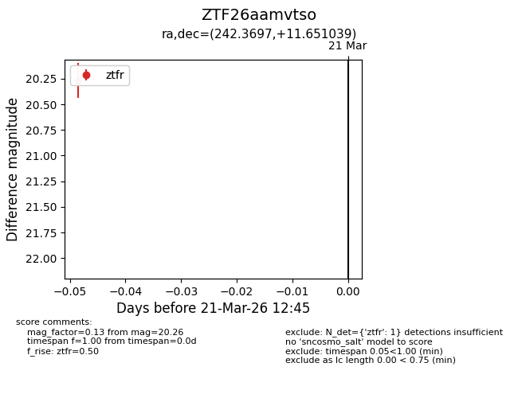
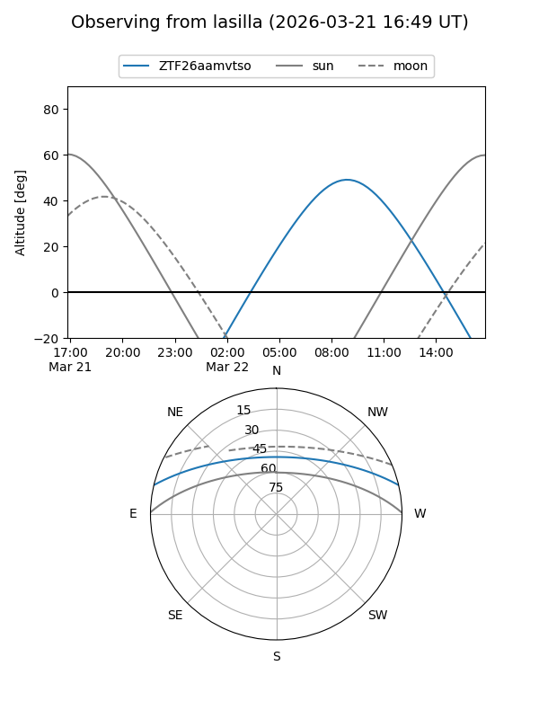
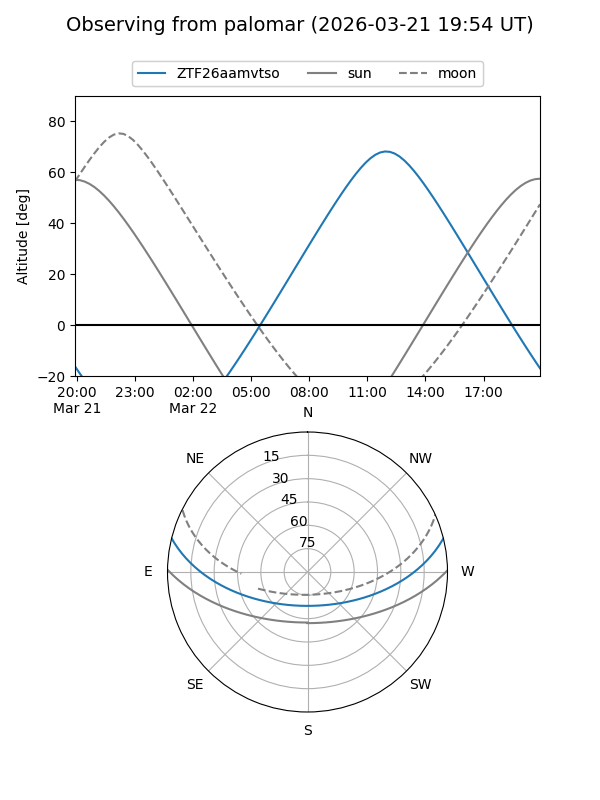

ZTF26aamvtso
Target ZTF26aamvtso at 2026-03-21 12:47
Aliases and brokers:
FINK: link
Lasair: link
ALeRCE: link
alt names
ZTF26aamvtso (ztf,fink_ztf)
Coordinates:
equatorial (ra, dec) = 242.3697,+11.65104
equatorial (HMS+DMS) = 16:09:28.73,+11:39:03.74
galactic (l, b) = (24.5130,+41.15205)
Flags:
Photometry:
last ztfr=20.26
1 ztfr detections
Lightcurve

Visibility


Additional plots